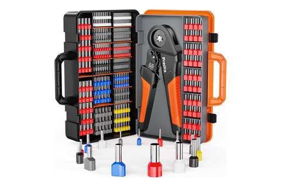
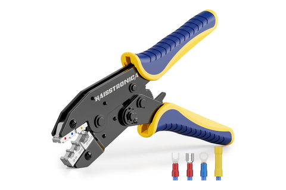
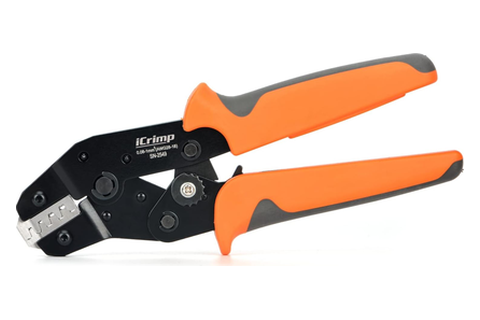
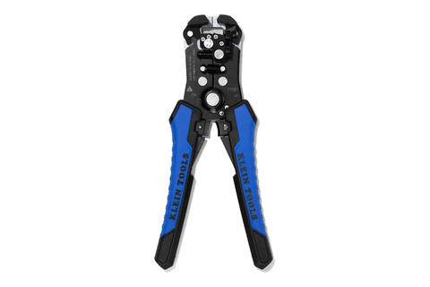
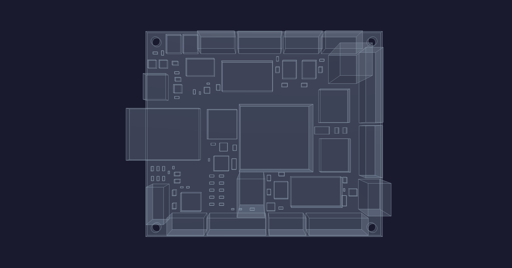

Crimp bench
four dies, one rule · every internal harness, built and tested off the chassis
Tool station · 08/13Kitchen edition
Nothing here is a machine. Four crimpers,
and the whole job is matching the barrel to what the conductor lands in.
Every wire is black on purpose — the build is jig-and-test and the
repair is swap-the-assembly, so per-conductor colour would do nothing, and
the housing label is the only thing that tells two looms apart.
Wire
22 AWG black · 16 AWG AC/12 V
Sleeve
PET braid 1/4–3/4″
Test
continuity pin-to-pin
Label
by assembly not per wire
Termination
Crimper
Lands in
What it is really for
FerruleCA-01 · ES-02/05
Preciva 28–5quad-indent square
Wago 221 lever nuts + screw terminals
one conductor per ferrule, unless a twin-entry is called for
A bootlace turns stranded wire into something a lever can clamp
without splaying it.
Faston + ringWR-01/02/04 · IP-04
Haisstronica 22–10insulated-terminal die
Female 6.3 mm / 4.8 mm at valves, motors, compressor, fan
rings at the ground bus and the compressor's foot bond
The device-end terminations, all push-on — nothing on the
chassis is soldered.
XH pinCA-01 · GT-04
iCrimp SN-2549open-barrel, double-wing
The board's labelled wafers — every loom XH
"B" profile, lance clicks, then tug it
Conductor wings on bare strands, insulation wings on jacket; the
housing's lance does the holding.
Fan-outCA-01
Lever, no die
ferruled conductors only
221-413 AC mains · 221-415 up to 5 · 221-420 beyond
at the device-cluster end — manifold, reservoir
One rail wire leaves the board and explodes at the far end, never N
parallel wires from the connector.
⛔
J4 and J7
are the same 7P housing. Label both looms
at the housing — a swap puts J4's 3V3/5V
onto J7's MCP reed inputs.
Cut, don't stock. Every run length is
layout-specific and only grows as the enclosure settles, so each
conductor comes off the bulk spool at build. Pre-crimped leads survive
only for short module-to-module hops.
Finish every sleeve end with heat-shrink so it
can't fray, and flush-cut every zip tie — no proud tail.
Have in hand

Preciva 28–5ferrule, quad-indent

Haisstronica22–10 insulated

iCrimp SN-2549open-barrel XH

Klein 11063Wself-adjusting strip

The one misplug the board cannot survive —
the two 7-pin shells sit on the same edge, so the label goes on at the
crimp bench, not at the chassis.